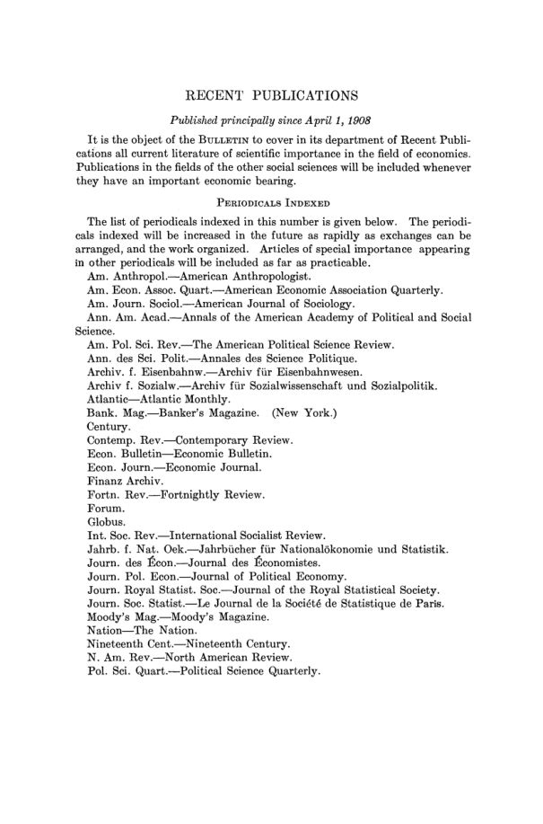

O segundo Bulletin: greenbacks, orçamentos operários e coleções
Leitura: 4 min
O segundo número do boletim traz notas sobre nomeações, bibliotecas e mortes, 25 resenhas com peso para moeda, estatística e socialismo, e a bibliografia corrente desde abril de 1908.


A primeira nota do número de junho de 1908 informa que S. N. Patten representou a associação na conferência convocada pelo presidente Roosevelt sobre a conservação dos recursos naturais do país. A segunda anuncia um novo editor: James B. Morman, do Experiment Station Record, em Washington, assume o departamento de economia agrícola.
O que contavam as notas?
Nomeações dominam. H. J. Davenport deixa Chicago para chefiar o departamento de economia da Universidade de Missouri. A. P. Andrew, de Harvard, vira consultor da comissão monetária dos Estados Unidos. As Columbia University Studies in History, Economics and Public Law passam da Macmillan para a Longmans, Green. O Bureau of Social Research, ligado à Russell Sage Foundation, conclui um estudo sobre empréstimos a assalariados em Nova York.
As bibliotecas aparecem também em Columbia: E. R. A. Seligman incorpora à sua biblioteca a coleção de Francis Place sobre literatura operária, reunida entre 1815 e 1840, e já tem completas as obras e periódicos de Robert Owen e Karl Marx. O número registra duas mortes. Richard Boeckh, da Universidade de Berlim, morreu aos 83 anos. Walter A. Wyckoff, de Princeton, morreu em 15 de maio; em 1892 e 1893 atravessou os Estados Unidos como trabalhador avulso e contou a experiência em The Workers.
Que livros foram resenhados?
São 25 resenhas. Na teoria, T. N. Carver resenha Value and Distribution, de Davenport, que reconstrói a distribuição a partir do custo de oportunidade, e o livro de Hawley sobre o empresário. Moeda ocupa três resenhas de H. Parker Willis: Wesley C. Mitchell sobre os greenbacks, Kemmerer sobre moeda e preços e a nova edição de The Bank and the Treasury, de Cleveland. Há duas monografias de Columbia sobre indústria, de Meyer Jacobstein sobre o tabaco e de Abraham Berglund sobre a United States Steel Corporation; os dois autores tinham aparecido nas notas de abril, no Bureau of Corporations e no Washington State College.
Mitchell descreve o volume como “o aparato estatístico de um livro ainda por escrever”. (the statistical apparatus of a book still to be written)
A estatística social aparece com Wage-Earners' Budgets, de Louise B. More, sobre as receitas e despesas de 200 famílias do bairro de Greenwich, em Nova York, e com os resumos internacionais de Gustav Sundbärg. As finanças estaduais entram com o estudo de Eugene E. Agger sobre orçamentos. O socialismo rende duas resenhas, de Robert Hunter e H. O. Arnold-Forster. Fecham o bloco a sociologia, com Small, Webster, Tenney e Thomas, e livros sobre o Congo e o Japão.
Como se organizava a bibliografia?
A seção Recent Publications cobre obras publicadas sobretudo desde 1º de abril de 1908. A lista de periódicos indexados cresce: entram o American Economic Association Quarterly, o Banker's Magazine de Nova York e o Finanz Archiv. A divisão em seções numeradas se mantém, das obras gerais e de teoria à miscelânea, com livros e artigos separados.
Na minha leitura
Na minha leitura, o número de junho expõe a tensão de método da economia americana em 1908. De um lado, construções dedutivas, como a teoria do empresário de Hawley e o custo de oportunidade de Davenport. De outro, o trabalho de reunir números: os salários e preços da era dos greenbacks, os orçamentos de 200 famílias, as tabelas de Sundbärg. A resenha de Willis sobre Kemmerer separa os dois lados do mesmo livro, o dedutivo e o indutivo. As notas sobre bibliotecas mostram a base material do segundo caminho.
Glossário
- Greenbacks
- papel-moeda inconversível emitido pelo governo americano durante a Guerra Civil.
- Custo de oportunidade
- valor da melhor alternativa de que se abre mão ao fazer uma escolha.
- Settlement
- casa de assistência instalada em bairro operário, onde voluntários moram e trabalham com a vizinhança.
Artigos desta edição
- Personal and Miscellaneous Notes — editores (pp. 107–114). Notas sobre nomeações, investigações, bibliotecas e conferências, a entrada de James B. Morman no conselho de editores e os obituários de Richard Boeckh e Walter A. Wyckoff. JSTOR
- Herbert Joseph Davenport, Value and Distribution — T. N. Carver (pp. 115–116). Revisão crítica das teorias do custo e da utilidade marginal e reconstrução da distribuição a partir do custo do empresário, baseado no custo de oportunidade sugerido por David I. Green. JSTOR
- G. P. Watkins, The Growth of Large Fortunes — Edson Newton Tuckey (pp. 117–120). Estudo, publicado pela própria associação, das causas econômicas das grandes fortunas, que o autor atribui a condições e instituições impessoais. JSTOR
- George Randall Lewis, The Stannaries: A Study of the English Tin Miner — Dana Carleton Munro (pp. 120–121). História da mineração de estanho inglesa em oito capítulos, da técnica e do comércio à tributação e às relações entre capital e trabalho, com apêndices documentais e séries de produção e preços. JSTOR
- Davis R. Dewey, National Problems, 1885–1897 — Frank L. McVey (pp. 122). Volume da American Nation Series sobre 1885–1897: pensões, supervisão das ferrovias, sindicatos, trustes e a questão monetária. JSTOR
- Frederick Barnard Hawley, Enterprise and the Productive Process — T. N. Carver (pp. 123–124). Teoria da produtividade econômica do ponto de vista do empresário, construída por dedução a partir de definições do objeto da economia. JSTOR
- Meyer Jacobstein, The Tobacco Industry in the United States — M. B. Hammond (pp. 124–127). Monografia de Columbia sobre a indústria do tabaco americana, cujos dois primeiros capítulos traçam sua história das origens coloniais à Guerra Civil. JSTOR
- Abraham Berglund, The United States Steel Corporation — John C. Duncan (pp. 127–128). Relato da formação da United States Steel Corporation, das empresas que a compõem e de suas relações com a companhia-mãe. JSTOR
- Hugo R. Meyer, The British State Telegraph — Frank L. McVey (pp. 128–129). Estudo da estatização dos telégrafos britânicos, na linha dos trabalhos anteriores do autor contra a expansão de funções industriais do governo. JSTOR
- E. D. Morel, Red Rubber — E. D. Jones (pp. 129–130). Denúncia do sistema de exploração da borracha no Estado Livre do Congo, que o resenhista lê como catálogo de impostos em espécie, trabalho forçado e companhias concessionárias. JSTOR
- W. Petrie Watson, The Future of Japan — Edward Van Dyke Robinson (pp. 131–134). Ensaio de filosofia da história que busca na religião a explicação das civilizações e a aplica ao Japão moderno. JSTOR
- Richard Harding Davis, The Congo and Coasts of Africa — E. D. Jones (pp. 134–135). Relato de viagem pelas costas ocidental e oriental da África e pelo rio Congo, com a descrição do Estado do Congo como empresa comercial de borracha e marfim. JSTOR
- Louise B. More, Wage-Earners' Budgets — Julius H. Parmelee (pp. 135–137). Estudo de dois anos, feito a partir do settlement Greenwich House, sobre receitas e despesas de 200 famílias de Nova York, por tamanho da família, ocupação e nacionalidade. JSTOR
- Wesley C. Mitchell, Gold, Prices, and Wages under the Greenback Standard — H. Parker Willis (pp. 137–139). Continuação de A History of the Greenbacks, formada sobretudo por tabelas de salários e preços baseadas no Décimo Censo e no relatório Aldrich, com apoio da Carnegie Institution. JSTOR
- E. W. Kemmerer, Money and Credit Instruments in their Relation to General Prices — H. Parker Willis (pp. 139–141). Tese de doutorado em dois livros: um abstrato, com métodos matemáticos, e um estatístico, sobre moeda em circulação, volume de negócios e reservas bancárias. JSTOR
- Frederick A. Cleveland, The Bank and the Treasury — H. Parker Willis (pp. 142). Nova edição que leva a história até a primavera de 1908, com capítulo introdutório sobre a evolução monetária recente e apêndice com projetos de lei apresentados no Congresso. JSTOR
- Eugene E. Agger, The Budget in the American Commonwealths — Carl C. Plehn (pp. 142–144). Estudo dos sistemas orçamentários de 45 estados americanos, incluindo auditoria e controle, que recomenda a publicidade como remédio. JSTOR
- Gustav Sundbärg, Aperçus statistiques internationaux — Walter F. Willcox (pp. 144–145). Décimo ano dos resumos de estatística internacional antes publicados no Statistisk Tidskrift, agora volume independente em francês, organizado por tema e não por país. JSTOR
- Robert Hunter, Socialists at Work — J. A. Lapp (pp. 146–147). Retrato do movimento socialista na Alemanha, Itália, França, Bélgica e Inglaterra, baseado sobretudo em observação própria do autor. JSTOR
- H. O. Arnold-Forster, English Socialism of Today — Frank A. Fetter (pp. 147–148). Resposta popular ao socialismo, publicada antes como artigos no Standard, que examina as doutrinas dos propagandistas com citações de seus programas oficiais. JSTOR
- Albion W. Small, Adam Smith and Modern Sociology — Charles A. Ellwood (pp. 148–150). Ensaio sobre a interdependência entre economia e sociologia que usa Adam Smith como exemplo, parte de um estudo maior sobre as ciências sociais do século XIX. JSTOR
- John C. Van Dyke, The Money God — I. A. Loos (pp. 150–151). Apelo, em linguagem popular, por mais peso do elemento ético nos negócios, com críticas a métodos implacáveis e a ideais apenas materiais. JSTOR
- Hutton Webster, Primitive Secret Societies — Ulysses G. Weatherly (pp. 151–154). Estudo, originalmente tese de doutorado, sobre casas dos homens, ritos de iniciação e sociedades secretas como instituições da política e da religião primitivas. JSTOR
- Alvan A. Tenney, Social Democracy and Population — Charles A. Ellwood (pp. 154–155). Monografia sobre a relação entre crescimento populacional, hereditariedade e seleção e a manutenção de uma democracia social, definida como sociedade em que todos têm oportunidade. JSTOR
- William I. Thomas, Sex and Society — Ulysses G. Weatherly (pp. 155–157). Nove ensaios de psicologia social sobre as diferenças entre os sexos e seus efeitos no controle social, na indústria e na moral. JSTOR
- Paul S. Reinsch, American Legislatures and Legislative Methods — Albert A. Giesecke (pp. 158–159). Volume da American States Series sobre a organização e o procedimento dos legislativos federal e estaduais e as forças que influem nas leis aprovadas. JSTOR
- Recent Publications (pp. 160–187). Bibliografia corrente, sobretudo de obras publicadas desde 1º de abril de 1908, com lista ampliada de periódicos indexados e seções temáticas numeradas de livros e artigos. JSTOR
Fontes
- Personal and Miscellaneous Notes (pp. 107–114). JSTOR · Internet Archive (PDF)
- [untitled] The Economic Bulletin, (1908-06-01), pages 115-116 (pp. 115–116). JSTOR · Internet Archive (PDF)
- [untitled] The Economic Bulletin, (1908-06-01), pages 117-120 (pp. 117–120). JSTOR · Internet Archive (PDF)
- [untitled] The Economic Bulletin, (1908-06-01), pages 120-121 (pp. 120–121). JSTOR · Internet Archive (PDF)
- [untitled] The Economic Bulletin (1908-06-01), page 122 (pp. 122). JSTOR · Internet Archive (PDF)
- [untitled] The Economic Bulletin, (1908-06-01), pages 123-124 (pp. 123–124). JSTOR · Internet Archive (PDF)
- [untitled] The Economic Bulletin, (1908-06-01), pages 124-127 (pp. 124–127). JSTOR · Internet Archive (PDF)
- [untitled] The Economic Bulletin, (1908-06-01), pages 127-128 (pp. 127–128). JSTOR · Internet Archive (PDF)
- [untitled] The Economic Bulletin, (1908-06-01), pages 128-129 (pp. 128–129). JSTOR · Internet Archive (PDF)
- [untitled] The Economic Bulletin, (1908-06-01), pages 129-130 (pp. 129–130). JSTOR · Internet Archive (PDF)
- [untitled] The Economic Bulletin, (1908-06-01), pages 131-134 (pp. 131–134). JSTOR · Internet Archive (PDF)
- [untitled] The Economic Bulletin, (1908-06-01), pages 134-135 (pp. 134–135). JSTOR · Internet Archive (PDF)
- [untitled] The Economic Bulletin, (1908-06-01), pages 135-137 (pp. 135–137). JSTOR · Internet Archive (PDF)
- [untitled] The Economic Bulletin, (1908-06-01), pages 137-139 (pp. 137–139). JSTOR · Internet Archive (PDF)
- [untitled] The Economic Bulletin, (1908-06-01), pages 139-141 (pp. 139–141). JSTOR · Internet Archive (PDF)
- [untitled] The Economic Bulletin (1908-06-01), page 142 (pp. 142). JSTOR · Internet Archive (PDF)
- [untitled] The Economic Bulletin, (1908-06-01), pages 142-144 (pp. 142–144). JSTOR · Internet Archive (PDF)
- [untitled] The Economic Bulletin, (1908-06-01), pages 144-145 (pp. 144–145). JSTOR · Internet Archive (PDF)
- [untitled] The Economic Bulletin, (1908-06-01), pages 146-147 (pp. 146–147). JSTOR · Internet Archive (PDF)
- [untitled] The Economic Bulletin, (1908-06-01), pages 147-148 (pp. 147–148). JSTOR · Internet Archive (PDF)
- [untitled] The Economic Bulletin, (1908-06-01), pages 148-150 (pp. 148–150). JSTOR · Internet Archive (PDF)
- [untitled] The Economic Bulletin, (1908-06-01), pages 150-151 (pp. 150–151). JSTOR · Internet Archive (PDF)
- [untitled] The Economic Bulletin, (1908-06-01), pages 151-154 (pp. 151–154). JSTOR · Internet Archive (PDF)
- [untitled] The Economic Bulletin, (1908-06-01), pages 154-155 (pp. 154–155). JSTOR · Internet Archive (PDF)
- [untitled] The Economic Bulletin, (1908-06-01), pages 155-157 (pp. 155–157). JSTOR · Internet Archive (PDF)
- [untitled] The Economic Bulletin, (1908-06-01), pages 158-159 (pp. 158–159). JSTOR · Internet Archive (PDF)
- Recent Publications (pp. 160–187). JSTOR · Internet Archive (PDF)
- Sumário da edição no JSTOR: The Economic Bulletin, vol. 1, nº 2.
Documento em domínio público (EUA, publicado antes de 1931), via JSTOR Early Journal Content e Internet Archive. Resumo e comentário do autor deste site, sem afiliação com a American Economic Association. Encontrou um erro? Escreva: a correção é publicada no próprio texto, com data.
← Nº 90 · Heilman, 1908: cinquenta anos de concessões dos bondes de Chicago